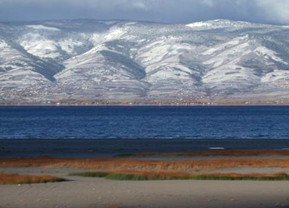

Bear Lake
Bear Lake is a natural freshwater lake on the Utah-Idaho border in the Western United States. About 109 square miles (280 km2) in size, it is split about equally between the two states; its Utah portion comprises the second-largest natural freshwater lake in Utah, after Utah Lake.
The lake has been called the "Caribbean of the Rockies" for its unique turquoise-blue color, which is due to the refraction of calcium carbonate (limestone) deposits suspended in the lake.
Its water properties have led to the evolution of several unique species of fauna that occur only within the lake.Bear Lake is over 250,000 years old. It was formed by fault subsidence that continues today, slowly deepening the lake along the eastern side.